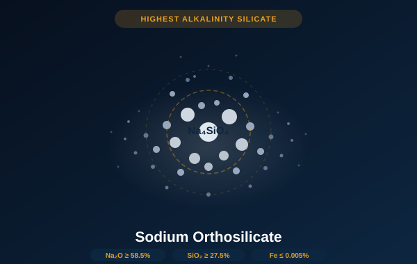

The most alkaline member of the sodium silicate family. Na₂O ≥58.5%, SiO₂ ≥27.5% — stronger alkalinity than sodium metasilicate. White granules or powder for heavy-duty cleaning, ceramics, coatings, and specialty industrial applications.

Sodium orthosilicate (Na₄SiO₄) is the most alkaline compound in the sodium silicate family — more so than either sodium metasilicate anhydrous or pentahydrate. It is produced by fusing silica with a high excess of sodium carbonate, yielding a compound with a Na₂O:SiO₂ ratio of approximately 2:1, compared to 1:1 for the metasilicate. This elevated alkalinity makes it the choice for applications requiring maximum saponification power, fast metal activation, or aggressive soil removal at lower temperatures.
The product is supplied as white to off-white granules or powder with very low iron content (Fe ≤ 0.005%) — ensuring no discoloration in light-colored coatings, white ceramics, or food-contact cleaning applications. Its powerful alkalinity enables highly effective grease and protein removal, making it a base compound in heavy-duty industrial cleaners and sanitizers used in the food processing, automotive, and metal finishing industries.
In ceramics manufacturing, sodium orthosilicate serves as a grinding aid and deflocculant, increasing the efficiency of ball milling operations for fine-grained ceramic bodies. In exterior wall coating systems, it functions as an inorganic binder and alkali-activator for mineral silicate paints, providing superior UV resistance, vapor permeability, and durability compared to organic coating systems.
| Parameter | Specification |
|---|---|
| Chemical Formula | Na₄SiO₄ |
| CAS Number | 13472-97-4 |
| Appearance | White to off-white granules or powder |
| Na₂O Content | ≥ 58.5% |
| SiO₂ Content | ≥ 27.5% |
| Fe (Iron) | ≤ 0.005% |
| Water Insolubles | ≤ 0.10% |
| Whiteness | ≥ 82 |
| Na₂O:SiO₂ Molar Ratio | ≈ 2.0 (compared to 1.0 for metasilicate) |
| pH (1% solution) | 13.0 – 13.5 |
| Bulk Density (granular) | 0.85 – 1.05 g/mL |
| Particle Size — Granular | 16 – 60 mesh |
| Particle Size — Powder | Pass 80 mesh (≥ 95%) |
| Moisture Content | ≤ 1.0% |
| Packaging | 25 kg woven bag or 500 kg jumbo bag |
| Shelf Life | 24 months (sealed, dry storage) |
| Storage Note | Highly hygroscopic. Store sealed in dry conditions. Handle with alkali-resistant PPE. |
| Product | Na₂O Content | pH (1%) | Relative Alkalinity |
|---|---|---|---|
| Sodium Orthosilicate (Na₄SiO₄) | ≥ 58.5% | 13.0 – 13.5 | ★★★★★ Highest |
| Sodium Metasilicate Anhydrous (Na₂SiO₃) | 51% ± 1% | 12.4 | ★★★★ High |
| Sodium Metasilicate Pentahydrate (Na₂SiO₃·5H₂O) | 28.7 – 30% | 12.0 – 12.4 | ★★★ Moderate |
| Sodium Silicate Liquid LGY33 (M.R. 1.3) | 14 – 16% | 13.0 | ★★★ Moderate |
| Sodium Silicate Liquid LGY401 (M.R. 3.4) | 8 – 9% | 12.0 – 12.5 | ★★ Mild |
Available in granular or powder form. Sample kits ship with full Certificate of Analysis and Safety Data Sheet.